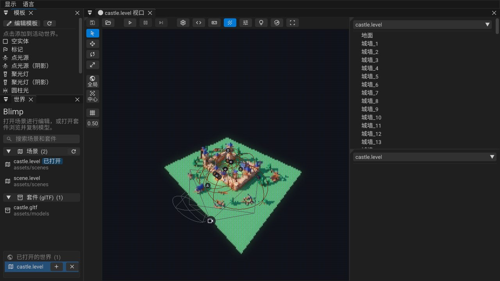
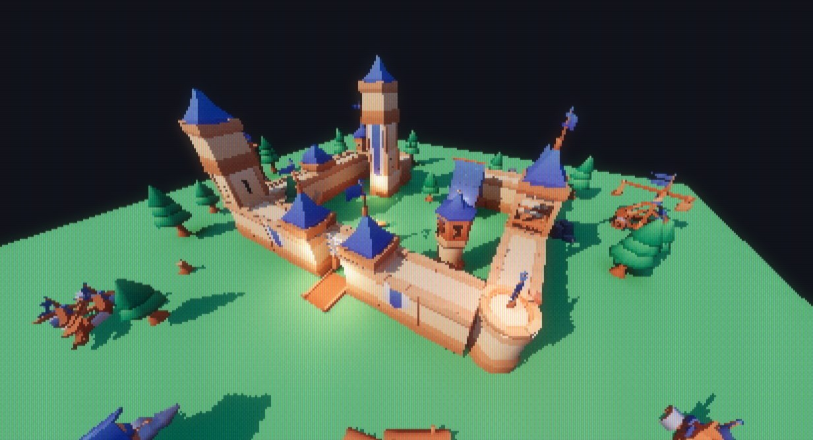
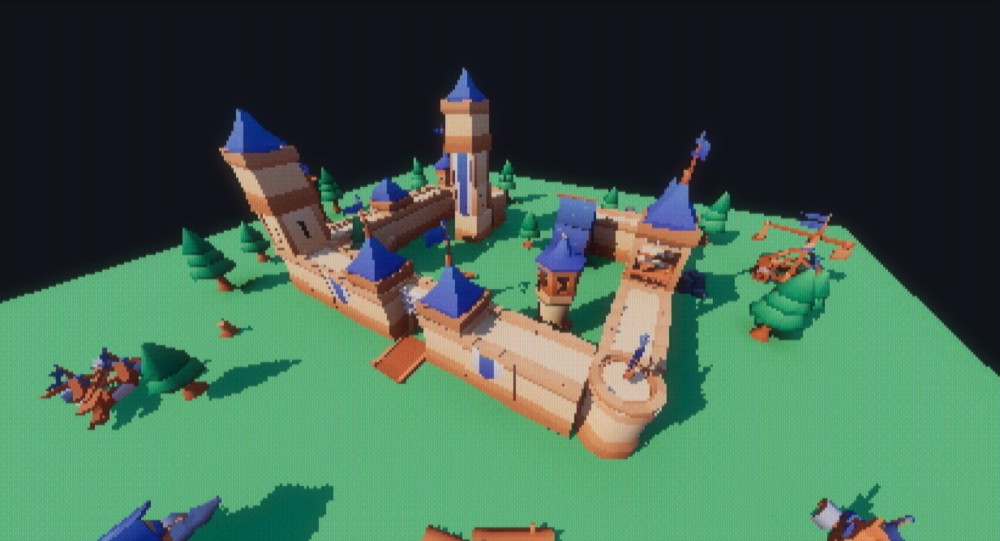
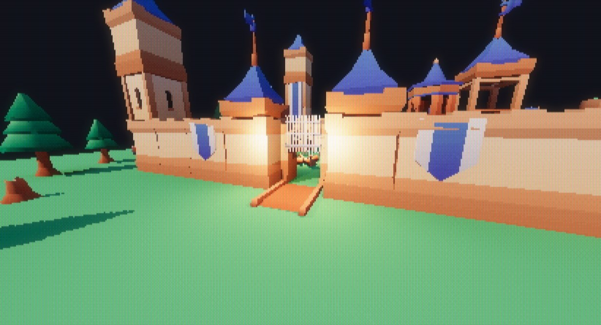
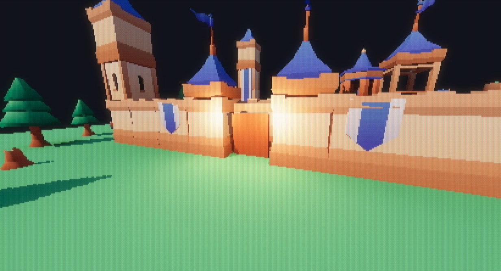
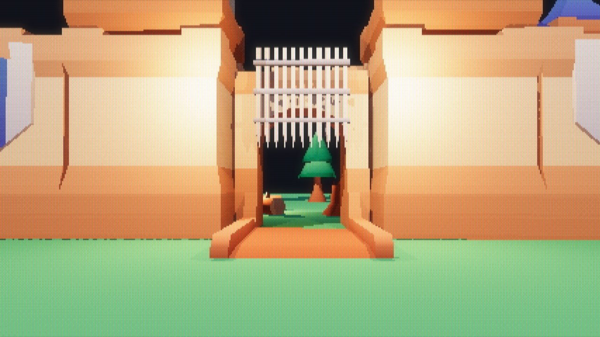

Lua 脚本指南World / Entity / Input · LuaCN
本文介绍怎样用 Lua 编写 Blimp 的游戏逻辑：脚本放在哪里、什么时候运行、能调用哪些引擎接口（实体、输入、移动与碰撞、声音、灯光组、相机），最后逐段讲解城堡关卡的脚本 assets/scripts/castle.luacn。
本文假设你已经会写 Lua，不讲 Lua 语言本身。引擎内嵌的是 LuaJIT（Lua 5.1 语法），矢量和四元数是 FFI 结构体。
- 运行时LuaJIT，Lua 5.1 语法
- 源文件.luacn → .lua
- 坐标左手系，Y 上，+Z 前
- 状态存在实体字段里，不在 Lua 里

assets/scenes/castle.level：左边是模板和世界列表，右边是实体列表。1核心规则：Lua 发命令、查状态，不保存状态
这是整个脚本系统的前提，后面每个接口都按它设计：
- 游戏状态归引擎所有。实体的位置、速度、声音都存在 Odin 那一侧；Lua 每帧读取它们，算出结果，再写回去。
- 脚本里不留会变的东西。不要在脚本的全局或 upvalue 里存计时器、状态机、"上一帧的值"。顶层的
本地只放常量（速度、半径、方向向量）。 - 需要随时间变化的东西，有两种写法：
- 写成时间的函数：
世界.时间()是运行世界的游戏时钟，暂停时停止。城门、旗帜、探照灯都按世界.时间()算出当前姿态，不需要任何记忆。 - 存进实体字段：例如玩家的竖直速度存在
玩家实体的velocity字段里。字段不够用就在实体 schema 里加一个（见 4.4）。
- 写成时间的函数：
这样做的好处是：脚本随时可以从头重新执行。保存脚本时引擎热重载它，游戏不会因此坏掉。
2脚本文件与运行方式
2.1两种脚本
| 世界脚本 | 引擎脚本 | |
|---|---|---|
| 文件 | 关卡的世界设置里的 script 路径，如 assets/scripts/castle.lua | 固定为 assets/scripts/main.lua |
| 何时运行 | 只在关卡运行（Play）时 | 引擎启动后整个会话 |
| 回调 | 世界.开始()、世界.更新(时间差) | 引擎.开始()、引擎.更新(时间差)、引擎.完结() |
世界.* / 实体.* 作用于 | 这个运行中的关卡 | 没有世界：调用会在日志里报错，什么也不做 |
游戏逻辑写在世界脚本里。 引擎脚本没有世界可以操作，只适合整个会话的逻辑（比如读 输入.*）。
每个世界脚本运行在自己的环境表里（找不到的名字回落到全局 _G），所以同时打开的两个关卡的脚本互不覆盖全局变量。脚本里的 世界 也是它自己的表，世界.开始 等回调只属于这个关卡。
2.2LuaCN：中文关键字的 Lua
脚本可以写成 .luacn：关键字是中文，构建时（以及编辑器热重载时）转译成同名的 .lua。关卡引用的是 .lua，但要改的是 .luacn，生成的 .lua 会被覆盖。也可以直接写普通 .lua，所有接口都有英文名。
| LuaCN | Lua | LuaCN | Lua |
|---|---|---|---|
本地 | local | 返回 | return |
函数 | function | 结束 | end |
如果 / 那么 | if / then | 否则如果 / 否则 | elseif / else |
当 / 做 | while / do | 对于 / 在 | for / in |
重复 / 直到 | repeat / until | 中断 | break |
真 / 假 / 空 | true / false / nil | 和 / 或 / 非 | and / or / not |
常用标准库也有中文别名：打印(print)、转文本(tostring)、转数字(tonumber)、遍历(pairs)、遍历列表(ipairs)、安全调用(pcall)、字符串.格式化(string.format)、表.插入(table.insert) 等，完整列表在 assets_engine/scripts/lua_chinese_defs.lua。
2.3给关卡挂脚本
- 打开关卡，点视口工具栏上的齿轮按钮打开世界设置，在
script里填脚本路径（项目相对路径，如assets/scripts/castle.lua）。 - 齿轮旁边的
<>按钮用 VS Code 打开这个脚本；如果它是由.luacn生成的，打开的是.luacn。 - 按 F5 运行。
运行相关的功能键：
| 键 | 作用 |
|---|---|
| F5 | 运行：复制一份关卡来运行，脚本执行 世界.开始() |
| F6 | 暂停 / 继续。暂停时 世界.更新 不调用，世界.时间() 不走 |
| F10 | 暂停时单步一帧 |
| F7 | 停止。运行副本被丢弃，编辑中的关卡从不被运行修改 |
| F8 | 在游戏模式（整个窗口是游戏画面，通过相机实体看）和编辑器之间切换，游戏继续运行 |
运行的是关卡的副本：脚本把吊桥转了、把玩家移走了，停止后关卡还是原样，也不会被保存。
2.4热重载与报错
- 运行时保存脚本，引擎会重新加载它，并重新执行
世界.开始()。因为脚本不保存状态，这总是安全的。 - 脚本出错时，错误写进日志，这个关卡的脚本停止运行，直到你修改脚本（热重载）或重新打开关卡。不会每帧刷屏。
打印(...)输出到引擎日志（控制台）。
3生命周期回调
function 世界.开始()
-- 运行开始时执行一次（脚本热重载后也会再执行一次）
end
function 世界.更新(时间差)
-- 关卡每走一帧调用一次；时间差 是这一帧的秒数
本地 t = 世界.时间() -- 自运行开始的游戏秒数，暂停时停止
end英文写法是 function World.start() / function World.update(dt) / World.time()。
世界.更新只在关卡真正前进的帧调用：暂停时不调用，F10 单步时调用一次。- 动画请基于
世界.时间()，不要在 Lua 里自己累加时间。
4实体
4.1句柄
实体就是句柄。Lua 拿到的是一个整数，所有实体接口都以它为第一个参数。
| 中文 | 英文 | 说明 |
|---|---|---|
世界.查找(名称) | World.find(name) | 按名称找实体，返回 句柄, 是否找到 |
实体.有效(句柄) | Entity.valid(h) | 句柄是否还指向一个存在的实体 |
世界.添加(名称, 模型, 位置) | World.add(name, model, pos) | 新建实体，返回句柄。模型 是资产键，如 "assets/models/castle.gltf:flag001"；名称重复时自动改成 name_1 这样的唯一名 |
世界.移除(句柄) | World.remove(h) | 删除实体 |
名称可以是中文（城堡关卡的实体全是中文名），按 UTF-8 存储，最长 64 字节，约 21 个汉字。
世界.查找 很便宜，每帧按名称查找就是推荐写法，不要把句柄缓存在脚本里。找不到时句柄无效，实体.有效 返回假，后续对它的读写都是安全的空操作：
本地 灯 = 世界.查找("探照灯")
如果 非 实体.有效(灯) 那么 返回 结束4.2读写字段
实体是一个"胖结构体"，所有字段都按名称读写。接口按值的类型区分：
| 类型 | 读 | 写 | 适用字段 |
|---|---|---|---|
| 数字 | 实体.取数(e, 字段) | 实体.设数(e, 字段, 值) | f32、整数、枚举（序号）、标志位（位掩码） |
| 布尔 | 实体.取布尔(e, 字段) | 实体.设布尔(e, 字段, 值) | bool |
| 文本 | 实体.取文本(e, 字段) | 实体.设文本(e, 字段, 值) | 名称、模型、声音等字符串 |
| 矢量 | 实体.取矢量(e, 字段) | 实体.设矢量(e, 字段, 矢量3) | vec3 |
| 四元数 | 实体.取四元数(e, 字段) | 实体.设四元数(e, 字段, 四元数) | quat |
英文名：Entity.get_number / set_number / get_bool / set_bool / get_string / set_string / get_vec3 / set_vec3 / get_quat / set_quat。
字段名用 schema 里的英文 id（编辑器检查器里显示的是中文标签）。字段名写错或类型不对时，读返回零值，写不生效。
本地 门 = 世界.查找("闸门")
本地 位置 = 实体.取矢量(门, "position")
实体.设矢量(门, "position", 矢量3(位置.x, 0.6, 位置.z))
实体.设数(世界.查找("主塔火把"), "intensity", 2.0)4.3常用字段
| 字段 | 类型 | 说明 |
|---|---|---|
name | 文本 | 名称，在一个关卡里唯一 |
position / rotation / scale | 矢量 / 四元数 / 矢量 | 变换 |
model | 文本 | 模型资产键 |
basic_flags | 标志 | 位 0 = 启用（Enabled），位 1 = 隐藏（Hidden） |
basic_static_flags | 标志 | 位 0 = 静态（Static），位 1 = 可渲染（Renderable），位 2 = 投射间接光（Cast Indirect） |
camera_type | 枚举 | 0 无，1 透视，2 正交 |
light_type | 枚举 | 0 无，1 平行光，2 点光源，3 聚光灯，4 圆柱光 |
color / intensity | 矢量 / 数字 | 灯光颜色与强度 |
fov / inner_fov | 数字 | 相机视角；聚光灯外 / 内锥角（度） |
range | 矢量（x, y） | 灯光：照射范围；声音：x 以内满音量，到 y 线性衰减为零 |
light_group | 数字 | 灯光所属的光源组，0 = 不可切换（见第 8 节） |
sound / volume / sound_flags | 文本 / 数字 / 标志 | 实体自带的声音（见第 7 节） |
collision | 枚举 | 0 无，1 包围盒，2 碰撞网格（_col），3 渲染网格 |
velocity | 矢量 | 游戏自用的速度，不保存到关卡文件 |
标志位按位掩码读写，例如隐藏一个实体：
本地 标志 = 实体.取数(e, "basic_flags") -- 1 = 只启用
实体.设数(e, "basic_flags", 标志 + 2) -- 加上 Hidden（假设原来没有隐藏）会被脚本移动的实体不要勾"静态"。静态实体参与探针烘焙，也是物理里的静态刚体；城堡里的吊桥、闸门、旗帜都只设了 Renderable。
4.4自定义字段
字段定义在项目根目录的 entity_schema.ini（也可以用引擎内的 schema 编辑器修改），构建时生成 src/gen_entity.odin。新加的字段不需要重新生成任何绑定，Lua 立即可以按名称读写。城堡玩家用的 velocity 就是这样一个游戏字段。
5数学库
| 中文 | 英文 | |
|---|---|---|
矢量2/3/4(x, y, …) | Vec2/3/4 | 支持 + - *（与数字或同类相乘）、取负；方法 :点乘 :叉乘 :长度 :标准化 :插值 |
四元数(x, y, z, w) | Quat | 四元数.单位()、四元数.轴角(轴, 弧度)、四元数.欧拉角(俯仰, 偏航, 滚转)；方法 :旋转(矢量) :球面插值 :逆 :共轭 :标准化 |
矩阵3 / 矩阵4 | Mat3 / Mat4 | 矩阵4.变换矩阵(位置, 旋转, 缩放)、:变换点 :变换方向 :逆矩阵 等 |
数学.* | CMath.* | 圆周率 正弦 余弦 反正切2 反正弦 开方 夹紧 截断(0–1) 插值 平滑阶跃 向下取整 角度转弧度 … |
- 四元数相乘
a * b表示先做b再做a（相对本地坐标）。城堡里四元数.轴角(上, 偏航) * 四元数.轴角(右, 俯仰)是先抬头低头、再左右转。 四元数:旋转(矢量)把向量转到这个朝向下，例如朝向:旋转(矢量3(0, 0, 1))是朝前的方向。- 角度一律是弧度。
坐标系：左手系，Y 向上，+Z 向前，+X 向右。
6输入
输入只在游戏模式下、窗口有焦点时有效（运行后，或按 F8 进入）。在编辑器里打字不会传进游戏；不在游戏模式时所有按键读作松开、所有轴读作 0。
| 中文 | 英文 | 说明 |
|---|---|---|
输入.按住(键) | Input.down(key) | 现在是否按着 |
输入.按下(键) | Input.pressed(key) | 这一帧刚按下 |
输入.松开(键) | Input.released(key) | 这一帧刚松开 |
输入.鼠标按住(n) / 输入.鼠标按下(n) | Input.mouse_down / mouse_pressed | 鼠标键 1–5：1 左键，2 中键，3 右键 |
输入.鼠标移动() | Input.mouse_delta() | 这一帧鼠标移动的像素（矢量2，+y 向下），锁定鼠标时也有效 |
输入.锁定鼠标(布尔) | Input.lock_mouse(b) | 隐藏光标并锁在窗口内（鼠标视角）。回到编辑器时自动放开，回到游戏时重新锁定 |
输入.手柄轴(名称) | Input.gamepad_axis(name) | 摇杆 −1 到 1（+y 向下，已去死区），扳机 0 到 1；无手柄时为 0 |
输入.手柄按住(名称) / 输入.手柄按下(名称) | Input.gamepad_down / gamepad_pressed | 手柄按键 |
键名是 SDL 的扫描码名："W"、"Space"、"Escape"、"Left Shift"、"Return"、"Up"…… 手柄名是 SDL 的手柄名：轴 "leftx" "lefty" "rightx" "righty" "lefttrigger" "righttrigger"，按键 "a" "b" "x" "y" "leftstick" "start"……
7声音
声音文件（.wav .ogg .mp3 .flac）在启动时全部解码，用项目路径作为键，例如 "assets/sounds/jump.wav"。Lua 拿不到声音句柄：要控制的声音就挂在实体上，实体就是句柄。
7.1实体上的声音
在编辑器里给实体设置：
sound：声音文件；volume：音量；sound_flags：开始时播放（运行开始自动播放）、循环、空间定位；range：x 以内满音量，到 y 线性衰减为零。
| 中文 | 英文 | 说明 |
|---|---|---|
实体.播放声音(e) | Entity.play_sound(e) | 按这个实体的 sound / volume / range / sound_flags 播放，声音跟着实体移动。没播出来返回假 |
实体.停止声音(e) | Entity.stop_sound(e) | 停止它的声音 |
7.2一次性声音
| 中文 | 英文 | 说明 |
|---|---|---|
世界.播放声音(键 [, 音量]) | World.play_sound(key [, volume]) | 不在空间中的声音：音乐、界面音效，哪里听都一样大 |
世界.在位置播放声音(键, 位置 [, 音量]) | World.play_sound_at(key, pos [, volume]) | 在某一点播放，按默认范围随距离衰减 |
注意：
- 同时最多 32 个声音。满了以后挤掉听起来最小的；新声音比所有正在播放的都小时直接丢弃。
- 同一个声音文件 0.05 秒内只会响一次（循环声音除外），每帧调用播放不会叠成噪音，但也不会每帧都响。
- 听者是正在显示运行世界的那个视口的相机（游戏模式下就是游戏相机）。
- 暂停时声音暂停，停止运行时全部停止。编辑中的关卡不发声。
8灯光组
灯光组用来在运行时整体调节一批灯：停电、蜡烛闪烁、窗户的灯一开一关。
- 每个关卡最多 4 个可切换的组，在世界设置 → 光源组里命名，并设置初始强度
scale和闪烁图案pattern。 - 每盏灯的
light_group字段指定它属于哪个组（1–4）。0 组永远满强度。 - 组的强度同时作用于这些灯的实时直接光和烘焙的间接光（每个组烘焙在探针的独立一层），所以关灯后墙上的反光也一起消失。
pattern是 Quake 风格的灯光图案：每个字母持续 0.1 秒，循环；a= 0，m= 1，z≈ 2；留空表示常亮。城堡的火把组用的是mmnmmommommnonmmonqnmmo。
| 中文 | 英文 | 说明 |
|---|---|---|
世界.设光源组(名称, 强度) | World.set_light_group(name, scale) | 0 = 关，1 = 和保存/烘焙时一样。没有这个名称的组时返回假 |
世界.光源组(名称) | World.light_group(name) | 当前强度（不含闪烁图案） |
世界.调试线(起点, 终点 [, 颜色]) | World.debug_line(from, to [, color]) | 画到下一帧 |
名称不区分大小写。最终亮度 = 组强度 × 闪烁图案当前的值，所以对火把组调用 世界.设光源组("torches", 0.5) 后它仍然闪烁，只是整体暗了一半。脚本设置的强度只属于这次运行，不会保存。


上图是城堡关卡把 torches、beacon、windows 三组全开和全关的对比：城门两侧的火把、右侧角楼的信标和庭院里的篝火都熄灭了，只剩平行光 sun 和探照灯（都在 0 组）。
9移动与碰撞
物理目前只提供查询：不做模拟，没有刚体下落。"东西怎么掉"由 Lua 自己决定（重力写进位移里）。
9.1哪些实体会挡路
运行开始时，引擎给每个启用、且 collision 不为"无"的实体建一个碰撞体：
collision | 形状 | 适合 |
|---|---|---|
| 无 | 不碰撞 | 旗子、装饰小物 |
| 包围盒 | 模型包围盒 × 缩放 | 树、石头，最便宜 |
| 碰撞网格（默认） | 套件里的 <模型>_col 网格 | 美术专门做了简化碰撞的模型 |
| 渲染网格 | 模型的所有三角形 | 低多边形的城墙、地面 |
勾了"静态"的实体是静态碰撞体；其他的会跟着实体移动——脚本转动吊桥，玩家就会被吊桥挡住。
9.2角色移动
本地 着地 = 实体.角色移动(e, 位移, 半径, 高度) -- Entity.move_character(e, delta, radius, height)给玩家、NPC 这类在场景里走动的角色用。引擎用物理（Box3D）把实体当成一个站在它 position 上的胶囊体（半径、总高度），移动 位移，沿碰撞面滑动：撞墙停下，斜坡和台阶会走上去。结果直接写进实体的 position。返回值表示结束时是否站在地面上（法线 y ≥ 0.7 的面算地面）。实体自己的碰撞体会被忽略。
只想直接改位置、不需要碰撞（吊桥、闸门、旗帜）就直接设 position / rotation 字段。
位移已经乘过 时间差；重力也是位移的一部分。速度要跨帧保留就存进实体字段（见第 10 节玩家的写法）。
9.3射线检测
本地 命中, 点, 法线, 实体号 = 世界.射线检测(起点, 方向, 距离) -- World.raycast(origin, dir, dist)沿射线找第一个碰撞（方向不必是单位向量），返回是否命中、命中点、表面法线和命中的实体句柄。
10相机
游戏画面通过运行世界里第一个启用的相机实体（camera_type 不为"无"）来渲染。控制相机就是写它的 position 和 rotation，和任何实体一样。
城堡的 主相机 在关卡里摆成编辑器的俯瞰视角；脚本在 世界.开始() 里把它转到玩家的朝向，之后每帧放到玩家眼睛的位置。
11调试
打印(...)输出到引擎日志。调试版引擎会把最近几秒的错误和警告显示在窗口左下角，脚本出错时不用去翻控制台；blimpctl log列出最近的日志。世界.调试线(起点, 终点 [, 颜色])/World.debug_line(from, to [, color])在这个世界的所有视口里（包括游戏模式）画一条线，只保留到下一帧，所以要在世界.更新里每帧画。暂停时线会保留。适合看射线、路径、触发范围。- 调试版引擎可以用
bin/blimpctl.exe从命令行执行 Lua：blimpctl worlds # 列出世界，运行副本的序号在这里 echo print(World.time()) | blimpctl lua 1 -lua <世界> -让World.*/Entity.*作用于指定的世界，适合在运行中的关卡里测试射线、声音、灯光组。例如在城堡的运行副本里从玩家眼睛向前打一条射线：local p = World.find("玩家") local hit, pt, n, e = World.raycast(Entity.get_vec3(p, "position") + Vec3(0, 0.34, 0), Vec3(0, 0, 1), 8) print(hit, Entity.get_string(e, "name"), pt) -- true 小树_1 Vec3(-2.98023e-08, 0.335, 1.60769) - 暂停（F6）后可以用
blimpctl lua改实体、改灯光组，画面立即反映，而脚本不会把它覆盖回去，因为暂停时世界.更新不运行。
12示例：城堡关卡
assets/scenes/castle.level 的世界设置里 script = assets/scripts/castle.lua，它由 assets/scripts/castle.luacn 生成。脚本做了六件事：城门开关、城门音效、探照灯扫动、旗帜飘动、灯光组变化，以及一个第一人称玩家。所有动画都只是 世界.时间() 的函数；唯一跨帧的状态（玩家的竖直速度）存在实体字段里。
12.1常量与工具函数
本地 上 = 矢量3(0, 1, 0)
本地 右 = 矢量3(1, 0, 0)
本地 前 = 矢量3(0, 0, 1)
本地 函数 平滑(x)
x = 数学.截断(x)
返回 x * x * (3 - 2 * x)
结束顶层只有常量和纯函数。平滑 是 0–1 的 smoothstep 缓动。
12.2城门：用时间算出姿态
-- 城门循环，0 = 关闭并升起，1 = 打开并放下：开 6 秒，关闭 2 秒，关 5 秒，打开 2 秒。
本地 函数 城门开度(t)
本地 p = t % 15
如果 p < 6 那么 返回 1 结束
如果 p < 8 那么 返回 1 - 平滑((p - 6) / 2) 结束
如果 p < 13 那么 返回 0 结束
返回 平滑((p - 13) / 2)
结束
本地 函数 更新城门(t)
本地 开度 = 城门开度(t)
本地 朝向 = 四元数.轴角(上, 数学.圆周率 / 2) -- 城门朝 -Z（它的套件部件偏航了 90 度）
-- 吊桥：铰链在原点，沿本地 +X 平放；升起时绕本地 Z 把 +X 往上转。
本地 吊桥 = 世界.查找("吊桥")
如果 实体.有效(吊桥) 那么
实体.设四元数(吊桥, "rotation", 朝向 * 四元数.轴角(前, (1 - 开度) * 数学.角度转弧度(80)))
结束
-- 闸门：城门打开时从拱门里升起（在吊桥放下之前先升）。
本地 闸门 = 世界.查找("闸门")
如果 实体.有效(闸门) 那么
本地 位置 = 实体.取矢量(闸门, "position")
实体.设矢量(闸门, "position", 矢量3(位置.x, 平滑(开度 * 1.5) * 0.6, 位置.z))
结束
结束要点：
城门开度(t)是一个 15 秒循环的纯函数。任意时刻（包括热重载之后、单步之后）都能直接算出城门该在哪，不需要"当前状态"变量。- 吊桥的旋转 = 基础朝向 × 绕本地 Z 的抬起角度。四元数右乘表示在本地坐标里旋转。
- 闸门只改
position.y，x、z 从实体上读出来原样写回。 - 吊桥和闸门的
collision不为"无"、也不是静态，所以物理碰撞体跟着它们动：吊桥升起时玩家走不过去。


12.3城门音效：检测"越过"某个时刻
-- 越过 = 这一帧越过了 间隔 的整数倍。
本地 函数 越过(t, 时间差, 间隔)
返回 数学.向下取整(t / 间隔) ~= 数学.向下取整((t - 时间差) / 间隔)
结束
本地 函数 更新城门声音(t, 时间差)
如果 越过(t - 6, 时间差, 15) 或 越过(t - 13, 时间差, 15) 那么 -- 开始关闭 / 开始打开
实体.播放声音(世界.查找("城门声"))
结束
结束不保存"上次播放的时间"，而是比较这一帧的开始和结束是否跨过了 6 秒、13 秒这两个节点。城门声 是放在城门处的一个空实体，它的 sound = assets/sounds/gate.wav、sound_flags = 空间定位、range = 0.5, 10，脚本只管"现在播"，怎么播由实体字段决定。
12.4探照灯与旗帜
本地 函数 更新探照灯(t)
本地 灯 = 世界.查找("探照灯")
如果 非 实体.有效(灯) 那么 返回 结束
本地 偏航 = 数学.圆周率 + 数学.正弦(t * 0.5) * 数学.角度转弧度(70)
实体.设四元数(灯, "rotation", 四元数.轴角(上, 偏航) * 四元数.轴角(右, 数学.角度转弧度(38)))
结束
本地 函数 更新旗帜(t)
本地 i = 1
当 真 做
本地 旗 = 世界.查找("旗帜_" .. i)
如果 非 实体.有效(旗) 那么 中断 结束
本地 摆动 = 数学.正弦(t * 2.3 + i * 1.7) * 0.35 + 数学.正弦(t * 5.1 + i) * 0.08
实体.设四元数(旗, "rotation", 四元数.轴角(上, 摆动))
i = i + 1
结束
结束- 探照灯是一个投射阴影的聚光灯实体，转它的
rotation就是转光束：先向下俯 38°，再左右扫 ±70°。 - 旗帜按命名约定
旗帜_1、旗帜_2……逐个查找，直到找不到为止。在编辑器里多复制一面旗（复制会自动编号）脚本就会让它一起飘，不用改代码。每面旗的相位i * 1.7不同，所以不会整齐划一。
12.5灯光组
-- 光源组（世界设置）：信标闪烁，大厅的窗户每 20 秒里暗 4 秒。
本地 函数 更新灯光(t)
世界.设光源组("beacon", 0.55 + 0.45 * 数学.正弦(t * 3))
世界.设光源组("windows", (t % 20) < 16 和 1 或 0)
结束城堡的世界设置里有三个组：torches（火把，带闪烁图案）、beacon（城门塔上的信标）、windows（大厅窗户）。火把的闪烁完全由图案完成，脚本不用管；信标用正弦做呼吸效果；窗户每 20 秒熄灭 4 秒。因为组强度也作用于烘焙的间接光，窗户熄灭时它照在庭院里的反光也会消失。
12.6第一人称玩家
玩家 是一个没有模型的实体，代表站在它 position 上的胶囊；主相机 每帧跟到它的眼睛处。

视角：从相机现在的朝向反推偏航和俯仰。 脚本不存"当前偏航角"，而是每帧从相机的 rotation 算出来，加上这一帧的鼠标 / 右摇杆输入：
本地 朝前 = 实体.取四元数(相机, "rotation"):旋转(前)
本地 鼠标 = 输入.鼠标移动()
本地 偏航 = 数学.反正切2(朝前.x, 朝前.z) + 鼠标.x * 灵敏度 + 输入.手柄轴("rightx") * 摇杆看速 * 时间差
本地 俯仰 = -数学.反正弦(数学.夹紧(朝前.y, -1, 1)) + 鼠标.y * 灵敏度 + 输入.手柄轴("righty") * 摇杆看速 * 时间差
俯仰 = 数学.夹紧(俯仰, -1.4, 1.4)
本地 朝向 = 四元数.轴角(上, 偏航) * 四元数.轴角(右, 俯仰)移动：键盘和左摇杆合成一个方向。
本地 向前 = 矢量3(数学.正弦(偏航), 0, 数学.余弦(偏航))
本地 向右 = 矢量3(数学.余弦(偏航), 0, -数学.正弦(偏航))
本地 前后 = -输入.手柄轴("lefty")
本地 左右 = 输入.手柄轴("leftx")
如果 输入.按住("W") 那么 前后 = 前后 + 1 结束
如果 输入.按住("S") 那么 前后 = 前后 - 1 结束
如果 输入.按住("D") 那么 左右 = 左右 + 1 结束
如果 输入.按住("A") 那么 左右 = 左右 - 1 结束
-- （长度超过 1 时归一化，按住左 Shift / 按下左摇杆时用跑速）
本地 水平 = (向前 * 前后 + 向右 * 左右) * 速度重力、跳跃与碰撞：竖直速度存在实体字段里。
本地 竖直 = 实体.取矢量(玩家, "velocity").y - 重力 * 时间差
本地 着地 = 实体.角色移动(玩家, 矢量3(水平.x * 时间差, 竖直 * 时间差, 水平.z * 时间差), 玩家半径, 玩家身高)
如果 着地 和 竖直 < 0 那么 竖直 = -0.1 结束 -- 轻轻压住地面，下一帧还算着地
如果 着地 和 (输入.按下("Space") 或 输入.手柄按下("a")) 那么
竖直 = 跳速
世界.播放声音("assets/sounds/jump.wav", 0.5)
结束
实体.设矢量(玩家, "velocity", 矢量3(0, 竖直, 0))这里是"Lua 不保存状态"的标准写法：读字段 → 计算 → 实体.角色移动 → 写回字段。速度在 玩家 实体上，脚本热重载后玩家照样在空中继续下落。
相机跟随、出界复位、脚步声：
本地 位置 = 实体.取矢量(玩家, "position")
如果 位置.y < -5 那么 -- 掉出了世界：回到出生点
位置 = 出生点
实体.设矢量(玩家, "position", 位置)
实体.设矢量(玩家, "velocity", 矢量3(0, 0, 0))
结束
本地 眼 = 位置 + 上 * 眼高
实体.设矢量(相机, "position", 眼)
实体.设四元数(相机, "rotation", 朝向)
-- 在地上走动时每 步距时间 一步，跑时按速度加快。
如果 着地 和 长 > 0.1 和 越过(t, 时间差, 步距时间 * 走速 / 速度) 那么
世界.在位置播放声音("assets/sounds/footstep.wav", 位置, 0.7)
结束脚步声复用了 12.3 节的 越过：每跨过一个步距就响一声，不需要计步器。
射线检测：按 E / 手柄 X 沿视线打一条 8 单位的射线。
如果 输入.按下("E") 或 输入.手柄按下("x") 那么
本地 命中, 点, 法线, 实体号 = 世界.射线检测(眼, 朝向:旋转(前), 8)
如果 命中 那么
世界.在位置播放声音("assets/sounds/ping.wav", 点)
打印("射线命中 " .. 实体.取文本(实体号, "name") .. " " .. 转文本(点))
结束
结束12.7回调
函数 世界.开始()
打印("castle.luacn: 开始")
-- 相机从玩家的朝向开始（关卡里的 主相机 是编辑器里的俯瞰视角）。
本地 玩家 = 世界.查找("玩家")
本地 相机 = 世界.查找("主相机")
如果 实体.有效(玩家) 和 实体.有效(相机) 那么
实体.设四元数(相机, "rotation", 实体.取四元数(玩家, "rotation"))
输入.锁定鼠标(真)
结束
结束
函数 世界.更新(时间差)
本地 t = 世界.时间()
更新城门(t)
更新城门声音(t, 时间差)
更新探照灯(t)
更新旗帜(t)
更新灯光(t)
更新玩家(t, 时间差)
结束世界.更新 只是按顺序调用各个系统，每个系统自己查找实体、读写字段。这和引擎本身"每帧几趟线性循环"的结构一致。
操作方式：WASD / 左摇杆走，左 Shift / 按下左摇杆跑，鼠标 / 右摇杆看，空格 / A 跳，E / X 射线检测，Esc 放开鼠标，左键再锁定。
附录接口速查
| 中文 | 英文 | 参数 → 返回 |
|---|---|---|
| 世界 | ||
世界.开始 / 世界.更新 | World.start / World.update | 由脚本定义的回调；更新(时间差) |
世界.时间() | World.time() | → 运行以来的游戏秒数 |
世界.查找(名称) | World.find(name) | → 句柄, 是否找到 |
世界.添加(名称, 模型, 位置) | World.add(name, model, pos) | → 句柄 |
世界.移除(句柄) | World.remove(h) | |
世界.射线检测(起点, 方向, 距离) | World.raycast(o, d, dist) | → 命中, 点, 法线, 句柄 |
世界.播放声音(键 [, 音量]) | World.play_sound(key [, vol]) | → 是否播放 |
世界.在位置播放声音(键, 位置 [, 音量]) | World.play_sound_at(key, pos [, vol]) | → 是否播放 |
世界.设光源组(名称, 强度) | World.set_light_group(name, s) | → 是否有这个组 |
世界.光源组(名称) | World.light_group(name) | → 强度 |
| 实体 | ||
实体.有效(e) | Entity.valid(e) | → 布尔 |
实体.取数 / 设数 | Entity.get_number / set_number | (e, 字段 [, 值]) |
实体.取布尔 / 设布尔 | Entity.get_bool / set_bool | (e, 字段 [, 值]) |
实体.取文本 / 设文本 | Entity.get_string / set_string | (e, 字段 [, 值]) |
实体.取矢量 / 设矢量 | Entity.get_vec3 / set_vec3 | (e, 字段 [, 矢量3]) |
实体.取四元数 / 设四元数 | Entity.get_quat / set_quat | (e, 字段 [, 四元数]) |
实体.角色移动(e, 位移, 半径, 高度) | Entity.move_character(e, delta, r, h) | → 是否着地 |
实体.播放声音(e) / 实体.停止声音(e) | Entity.play_sound / stop_sound | → 是否播放 / 无 |
| 输入 | ||
输入.按住 / 按下 / 松开(键) | Input.down / pressed / released | → 布尔 |
输入.鼠标按住 / 鼠标按下(n) | Input.mouse_down / mouse_pressed | → 布尔 |
输入.鼠标移动() | Input.mouse_delta() | → 矢量2 |
输入.锁定鼠标(布尔) | Input.lock_mouse(b) | |
输入.手柄轴(名称) | Input.gamepad_axis(name) | → 数字 |
输入.手柄按住 / 手柄按下(名称) | Input.gamepad_down / gamepad_pressed | → 布尔 |
引擎（main.lua） | ||
引擎.开始 / 更新 / 完结 | Blimp.start / update / finish | 由 main.lua 定义的会话级回调 |